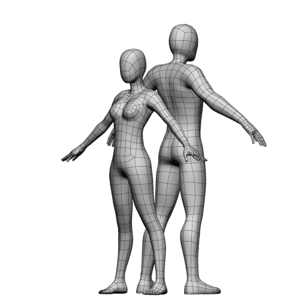
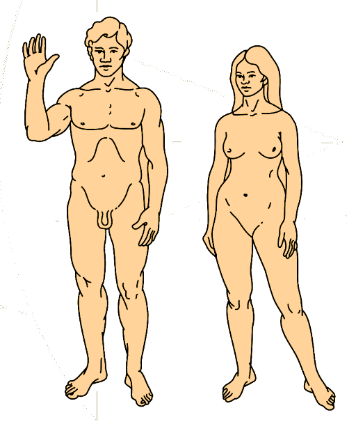
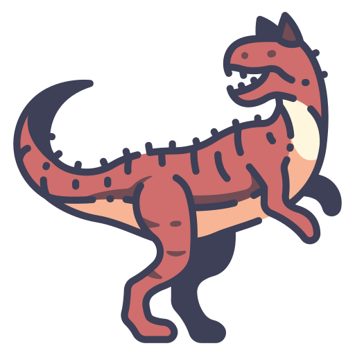
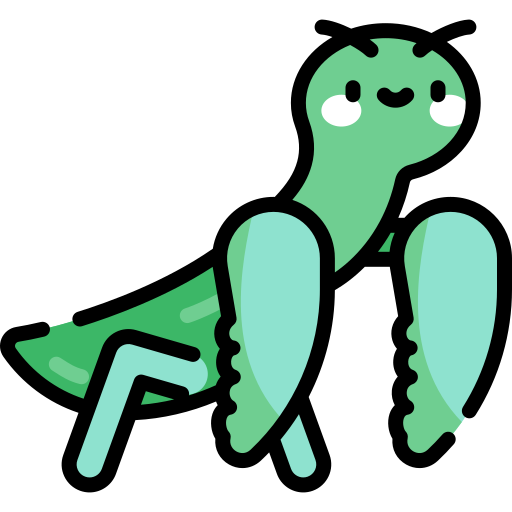
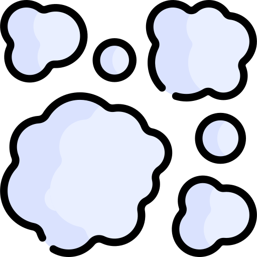

ExoPlaneteer Life Forms
Each planet has a dominant, indigenous life form. All lifeforms are equally intelligent however each has peculiar, unique traits and abilities the others do not. Each life form population must also be managed in its own way for maximum Tritanium-44 production and to avoid disaster.
Humanoids - Four limbs, erect, moving on the lower two limbs but a huge variety of characteristics outside of that basic shape. This is the most common life form in the galaxy.
 Quadrupeds - Four limbs, all useful
for many purposes, physically powerful and highly capable with machine technology. Very common.
Quadrupeds - Four limbs, all useful
for many purposes, physically powerful and highly capable with machine technology. Very common.
Humans - A common population in the galaxy. Humans exist on a huge range of planets and may possibly have been seeded from the same stock in some distant past. Humans are very capable in a wide variety of arenas and are particularly inventive.
Reptilians - Four limbs, tough skins, savage and aggressive. The Reptilian life forms are capable with machines.
Insectoids - Six limbs, highly nimble with machine technology, very well organized and very tough with exoskeletons that protect their internal organs. Possibly the most successful life forms in the universe.
 Cephalapoids - Eight limbs, soft bodies,
hyper-intelligent with unmatched dexterity with machinery and devices of all kinds.
Cephalapoids - Eight limbs, soft bodies,
hyper-intelligent with unmatched dexterity with machinery and devices of all kinds.
 Aerial - Flying life forms, only barely
capable of machine usage. Excellent at mobility, transportation and exploration. Due to this ease of
transportation and messaging. Aerial civilizations have high capability of extracting natural
resources due to the unlimited ability to explore all terrain types.
Aerial - Flying life forms, only barely
capable of machine usage. Excellent at mobility, transportation and exploration. Due to this ease of
transportation and messaging. Aerial civilizations have high capability of extracting natural
resources due to the unlimited ability to explore all terrain types.
 Aquatic - Prevented by nature from developing
machine based technology, aquatic life forms abilities lie in the harnessing of liquids in the environment,
and the usage of their minds, and psi powers that would be considered magical by other life forms. Aquatics
can summon the living resources of an entire planet toward a common goal using their minds alone.
Aquatic - Prevented by nature from developing
machine based technology, aquatic life forms abilities lie in the harnessing of liquids in the environment,
and the usage of their minds, and psi powers that would be considered magical by other life forms. Aquatics
can summon the living resources of an entire planet toward a common goal using their minds alone.
Fungoid - Able to survive almost anything, develop into huge minds capable of scanning interstellar space. Good at discovering information over vast distances, spies. Able to inhabit host species, they can control other species to do physical labor for them.
Plant - Able to harvest Tritanium-44 directly from the planet surface, their great roots cracking the rocks and reaching deep into the planetary crust. Strong but slow, and almost indestructible.
 Blob - Blob life forms are able to create
Tritanium-44 directly by liquifying rock and finding ores directly. Blobs can assume the appearance of other
life forms, but cannot perform anything complex as those life forms. Blobs can spore up, need no atmosphere
and can survive in a vacuum (providing they can find sustenance).
Blob - Blob life forms are able to create
Tritanium-44 directly by liquifying rock and finding ores directly. Blobs can assume the appearance of other
life forms, but cannot perform anything complex as those life forms. Blobs can spore up, need no atmosphere
and can survive in a vacuum (providing they can find sustenance).
Gaseous - Gaseous life forms can directly manipulate chemistry, they can survive in the harshest of conditions, even the vacuum of space. They are immortal and wise beyond everything. They cannot manipulate objects or energies directly beyond the creation of minute amounts of chemical compounds from source components.